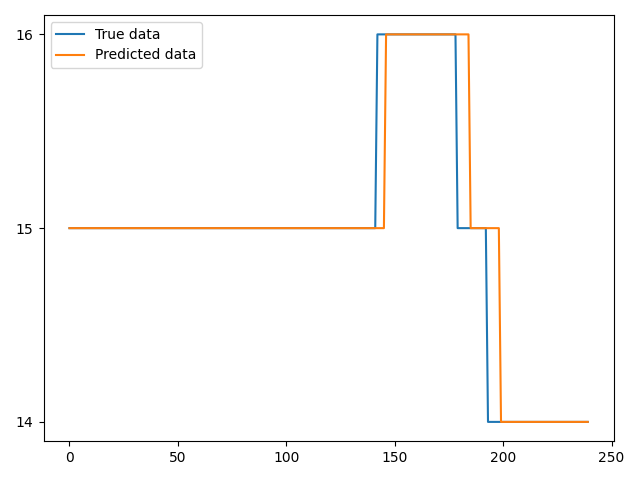

交通流量预测
注意
运行该脚本之前，应先运行generate_traffic.py并确保在town10中成功放置车辆。
main函数中首先定义了argparser和carla模块，其中，argparse模块用于解析命令行参数，包括host（主机IP地址）、port（TCP端口号）、traffic_id（交通灯ID）、color_id（交通灯颜色ID）和color_time（交通灯时间）。
args= argparser.parse_arg()
argparser = argparse.ArgumentParser(description=__doc__)
argparser.add_argument('--host', metavar='H', default='127.0.0.1', help='IP of the host server (default: 127.0.0.1)')
argparser.add_argument('-p', '--port', metavar='P', default=2000, type=int, help='TCP port to listen to (default: 2000)')
argparser.add_argument('--traffic_id', metavar='I', default=1, type=int, help='traffic light id')
argparser.add_argument('--color_id', metavar='C', default=1, type=int, help='traffic light color id')
argparser.add_argument('--color_time', metavar='T', default=20, type=int, help='set traffic light time')
使用指定的主机IP地址和端口号连接到Carla仿真器。同时，设置与仿真器通信的超时时间。最后，代码通过获取Carla仿真器的世界对象，可以在仿真环境中进行交通灯的操作和控制。
client = carla.Client(args.host, args.port)
client.set_timeout(10.0)
world = client.get_world()
使用world.get_settings()方法获取Carla仿真器的当前设置。将Carla仿真器的设置更改为同步模式，并将时间步长设置为0.05秒，以便以固定的时间间隔进行仿真，控制仿真的速度和精确度。
settings = world.get_settings()
settings.synchronous_mode = True
settings.fixed_delta_seconds = 0.05 #仿真环境会以0.05秒的时间前进。
world.apply_settings(settings)
获取所有正在行驶的车辆列表
vehicle_list = world.get_actors().filter('vehicle.*')
划定路口范围
xmax = -11
xmin = -77
ymax = 57
ymin = -13
创建多个数据结构，其中vehicle_positions用于存储车辆实时位置，traffic_data用于存储路口实时的车流量数据，timestamps用于存储时间戳，traffic_flow用于统计车流量。
vehicle_positions = {}
traffic_data = []
timestamps = []
traffic_flow = []
统计车流量数据。假设仿真时间步一共为1000。在每个时间步中，遍历所有正在行驶的车辆。对于每辆车辆，获取其位置信息，并判断其是否在目标路口的区域内。如果车辆在区域内，将计数器加1，并将车辆的位置信息存储到字典vehicle_positions中。
for t in range(1000):
world.tick()
count = 0
for vehicle in vehicle_list：
location = vehicle.get_location()
x = location.x
y = location.y
z = location.z
if x <= xmax and x >= xmin and y <= ymax and y >= ymin:
count += 1
vehicle_positions[vehicle.id] = (x, y, z)
对应的时间戳和车流量数据分别存入timestamps、traffic_flow， 而traffic_data包括这两种数据。
traffic_data.append((t, count))
timestamps.append(t)
traffic_flow.append(count)
traffic_data写入csv文件
filename = "traffic_data.csv"
with open(filename, "w", newline='', encoding='utf-8') as file:
writer = csv.writer(file)
writer.writerow(["head", "value"]) # 写入表头
for data in traffic_data:
writer.writerow([data[0], data[1]]) # 写入数据
data = load_data('traffic_data.csv', 200)#读取数据
从交通流量文件中加载数据并进行预处理。首先将数据读取为DataFrame对象，并绘制原始数据的折线图。通过指定的时间步大小对数据进行切片，形成训练样本并返回。
def load_data(filename, time_step):
df = pd.read_csv(filename)
data = df.value
plt.title('original data')
plt.plot(data)
plt.show()
result = []
for index in range(len(data) - time_step):
result.append(data[index:index + time_step + 1])
return np.array(result)
使用MinMaxScaler对数据进行*归一化处理，然后按照7：3的比例将数据集划分为训练集和测试集。
scaler = MinMaxScaler(feature_range=(0, 1))
dataset = scaler.fit_transform(data)
train_count = int(0.7 * len(dataset))
x_train_set, x_test_set = dataset[:train_count, :-1], dataset[train_count:, :-1]
y_train_set, y_test_set = dataset[:train_count, -1], dataset[train_count:, -1]
对训练集和测试集的输入和输出数据进行维度调整，其中输入数据x_train_set、x_test_set 为三维，如(样本数量, 时间步数, 特征数量），输出数据y_train_set、y_test_set为二维，如(样本数量, 1)。以满足LSTM模型的输入要求。
x_train_set = x_train_set.reshape(x_train_set.shape[0], 1, x_train_set.shape[1])
x_test_set = x_test_set.reshape(x_test_set.shape[0], 1, x_test_set.shape[1])
y_train_set = y_train_set.reshape(y_train_set.shape[0], 1)
y_test_set = y_test_set.reshape(y_test_set.shape[0], 1)
定义并创建了层次结构为[200,500,500,1]LSTM模型，其中200，500，500，1分别表示模型的三个隐层层的神经元数量，1为输出层的神经元数量。
layer = [200, 500, 500, 1]
model = build_lstm_model(layer)
构建LST模型。该函数创建Sequential模型对象，用于按顺序堆叠神经网络层。添加LSTM层、Dropout层和Dense全连接层，以及设置损失函数和优化器，提供一个简洁的方式来创建和编译LSTM神经网络模型，以便进行后续的训练和预测操作。
def build_lstm_model(layer):
model = Sequential()
model.add(LSTM(
input_shape=(1, layer[0]), units=layer[1], return_sequences=True))
model.add(Dropout(0.2))
model.add(LSTM(
units=layer[2], return_sequences=False))
model.add(Dropout(0.2))
model.add(Dense(units=layer[3], activation='linear'))
model.compile(loss='mse', optimizer='adam')
return model
训练模型。将准备好的训练集数据x_train_set和对应的目标值y_train_set，对构建好的模型进行训练。其中，batch_size为每次迭代使用的样本数量，epochs为训练的迭代次数 ，validation_split: 验证集的比例。
model.fit(x_train_set, y_train_set, batch_size=100, epochs=25, validation_split=0.2)
预测未来交通流量。使用训练好的模型对测试集数据x_test_set进行预测，得到预测结果y_predicted。
y_predicted = model.predict(x_test_set)
绘制曲线，首先进行了数据的填充和逆标准化处理，将其转换回原始数据的范围，然后调用plot_curve函数进行曲线绘制，以便可视化对比模型的预测结果和真实的原始数据，以便进行结果评估和分析。
temp = np.zeros((len(y_test_set), 200))
origin_temp = np.hstack((temp, y_test_set))
predict_temp = np.hstack((temp, y_predicted))
origin_test = scaler.inverse_transform(origin_temp)
predict_test = scaler.inverse_transform(predict_temp)
predict_test = np.round(predict_test).astype(int)
plot_curve(origin_test[:, -1], predict_test[:, -1])
定义plot_curve函数用于绘制真实数据和预测数据的曲线图。下图基于200秒之前的历史交通流量数据，对未来时间序列的流量预测。
def plot_curve(true_data, predicted_data):
fig, ax = plt.subplots()
ax.plot(true_data, label='True data')
ax.plot(predicted_data, label='Predicted data')
ax.legend()
# 设置y轴的格式化为整数
ax.yaxis.set_major_formatter(ticker.ScalarFormatter(useOffset=False, useMathText=True))
ax.yaxis.set_major_locator(ticker.MaxNLocator(integer=True))
plt.show()
下图基于200秒的历史交通流量数据，对未来时间序列的流量预测。 